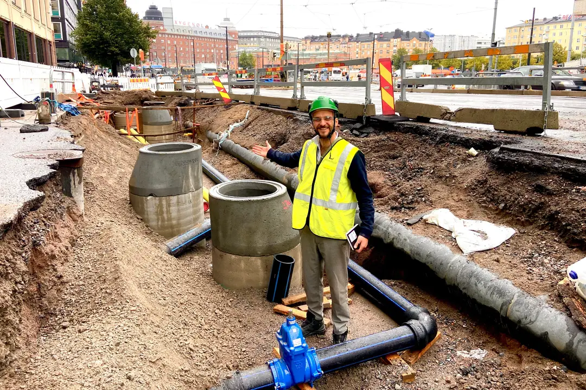

01
Fotografo
Foto nga kamera fikse në kantier, të bëra automatikisht çdo katër orë, ose të ngarkuara nga telefoni, kamera apo droni në koordinatat e planit tuaj.
Prototip funksional / Hapi tjetër: testi në terren
WorkGuardAI lexon planin DWG që e keni tashmë dhe mat ecurinë e punimeve të dheut nga foto të zakonshme të kantierit, pikë pas pike. Prototipi funksionon me planin dhe fotot e një projekti real. Tani kërkojmë kantierin e parë pilot.
25–26 nëntor 2026 Prezantim në skenë në MeOut Summit, Budapest
01 · Si funksionon
Foto nga kamera fikse në kantier, të bëra automatikisht çdo katër orë, ose të ngarkuara nga telefoni, kamera apo droni në koordinatat e planit tuaj.
Një model AI me burim të hapur për thellësinë (Depth Anything V2) vlerëson thellësinë e gërmimit në metra nga çdo foto, në koordinatën e saj të planit.
Thellësia e vlerësuar krahasohet me thellësinë e planifikuar nga DWG-ja, duke dhënë ecurinë në çdo pikë të planit.
Çdo pikë tregon gjendjen me ngjyrë, një shirit i përgjithshëm ecurie përmbledh kantierin, dhe njoftimet me email raportojnë koordinatat me thellësinë aktuale dhe të planifikuar.
Koncept ilustrues me të dhëna shembull. Prototip funksional; testi në terren në pritje. Po studiojmë më tej: GPS të kamerës dhe LiDAR për saktësi më të lartë.
Foto të zakonshme kantieri, si ato që mat prototipi: të bëra me telefon ose dron, ditën dhe natën.


02 · Prototipi
Prototipi është demonstruar me një skedar real DWG dhe foto reale kantieri. Ende nuk është përdorur në një kantier aktiv. Testi i parë në terren është hapi tjetër.


Ndërfaqja e prototipit, e testuar me planin dhe fotot e një projekti real. Hapi tjetër: testi në terren. Emrat e skedarëve të klientit, koordinatat e kantierit dhe shifrat janë të turbulluara.
03 · Për kë është
Ju e keni tashmë planin DWG. WorkGuardAI e përdor për të treguar sa ka ecur gërmimi dhe punimet e dheut në çdo pikë, nga foto që ekipi juaj mund t'i bëjë gjatë një vizite të zakonshme në kantier.
Bashkitë dhe agjencitë që porosisin rrugë, rrjete shërbimesh dhe punime publike mund të ndjekin ecurinë për çdo pikë kundrejt planit të miratuar, të matur nga foto të kantierit.

04 · Rreth nesh
WorkGuardAI u themelua në Finlandë më 30 korrik 2024. Ekipi punon nga gjashtë vende evropiane, pranë sipërmarrësve dhe investitorëve publikë që do ta përdornin produktin.



05 · Arritjet
Tre vite programesh, garash dhe ndërtimi, çdo hap i shënuar me burimin e tij.

MeOut Summit · Budapest, Hungari
1 nga 20
startupet e përzgjedhura nga rreth 200 aplikime për të prezantuar në skenë në Pitch Marathon të MeOut Summit në Budapest, Hungari, 25–26 nëntor 2026.
Baltic Impact Accelerator
8.000 €
financim programi nga Baltic Impact Accelerator i LUT University (Interreg Central Baltic, i bashkëfinancuar nga BE), i përdorur për ndërtimin e MVP-së.


I përzgjedhur si një nga 20 startupet, nga rreth 200 aplikime, për të prezantuar në skenë në Pitch Marathon më 25–26 nëntor, para një paneli investitorësh. I prezantuar në EU-Startups.
Artikulli në EU-Startups (hapet në skedë të re)Në listën e ngushtë për programin 10-javor të rritjes; prezantoi para panelit të përzgjedhjes në Selection Day, më 9 shtator.
Pas një shqyrtimi fillestar, VINCI Energies shprehu interes për WorkGuardAI dhe na ftoi të aplikojmë në sfidën e vitit 2026 “Expertise meets AI”. Aplikimi u dorëzua.
Përfundoi grupin e 3-të të përshpejtuesit gjashtëmujor, të financuar nga Interreg Central Baltic dhe të bashkëfinancuar nga Bashkimi Evropian, me 8.000 € financim programi.
Rreth programit (hapet në skedë të re)Motori bazë u ndërtua me një partner zhvillimi, i financuar përmes Baltic Impact Accelerator.
Në Slush 2025 mes alumnëve të Helsinki Incubators.
Njoftimi në LinkedIn (hapet në skedë të re)I përzgjedhur nga tre qytetet mes ofertuesve konkurrues, për të zhvilluar praktika ndërtimi më të qëndrueshme në rajonin e Helsinkit.
Njoftimi në LinkedIn (hapet në skedë të re)Startup i ftuar në Polar Bear Pitching në Oulu më 27 shkurt 2025, çmimi për fitoren në Sauna Pitching.
Fitoi Sauna Pitching më 24 shkurt 2025.
Njoftimi në LinkedIn (hapet në skedë të re)Përfundoi programin gjashtëmujor të Helsinki Incubators, me mentorë dhe seminare javore për modelet e biznesit, shitjet dhe prezantimin.
Kompania u themelua në Finlandë më 30 korrik 2024.
Aty nisi ideja, si monitorim në distancë i automjeteve. Komentet e mentorëve dhe prezantimet e kthyen drejt kantiereve të ndërtimit.
ME MBËSHTETJEN E

Programet e përfunduara: Baltic Impact Accelerator (LUT University, Interreg Central Baltic) dhe NEXUS Incubator (Helsinki Incubators, Universiteti i Helsinkit).

06 · Ekipi


07 · Pilot
Kërkojmë kantierin e parë aktiv. Nëse kryeni punime dheu ose infrastrukture dhe keni planet DWG për to, mjafton një telefonatë e shkurtër për të parë nëse një pilot është i përshtatshëm.
Ju tregojmë prototipin në një projekt demonstrues dhe kontrollojmë nëse kantieri juaj përshtatet: punime dheu ose infrastrukture, plane DWG dhe dikush që mund të bëjë foto.
Një kantier, një periudhë e caktuar dhe trajtim i qartë i të dhënave, të rëna dakord në një marrëveshje të shkurtër pilot. Ne ngarkojmë planin tuaj DWG dhe krijojmë aksesin për ekipin tuaj.
Ekipi juaj bën foto në koordinatat e planit. Ne kontaktojmë çdo javë dhe krahasojmë rezultatet me matjet tuaja. Ju merrni një raport të shkruar me rezultatet.
Pilotët bien dakord një kantier në një kohë. Çmimi përcaktohet pas testit në terren, bazuar në atë që ai tregon.
Për partnerë teknologjie, topografie dhe ndërtimi, si dhe për fonde, qytete, universitete dhe investitorë që mbështesin teknologjinë evropiane të ndërtimit në fazë të hershme.
ek@workguardai.com